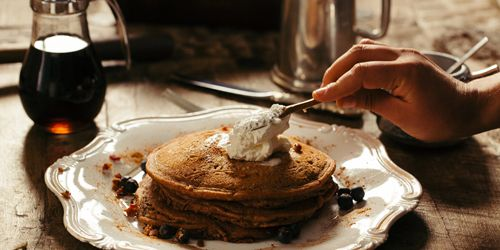

Welcome
We are a family-owned business serving your favorite bakery products in heart of Dublin.
We are destination for delicious cakes, donuts, coffee, cookies — and of course our legendary cupcakes.
Everything is made fresh on the premises with only the finest ingredients, like real butter and free-range eggs.
Our Cupcakes
Rich, flaky, buttery & incredibly delicious, our Cupcakes are made with a special 3-step process that's been handed down from generation to generation.
NO CUTTING CORNERS HERE!